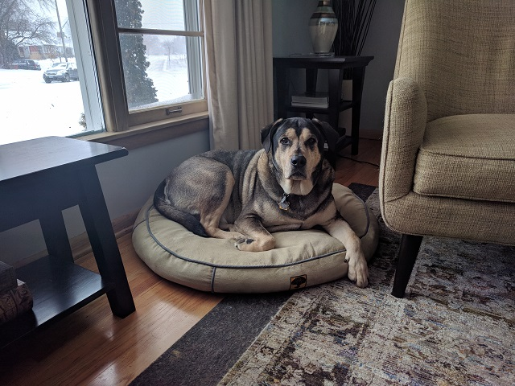

About Me
The handsome fella in the picture is our dog, Trek. I tried to find a picture of myself that is half as appealing as his but I wasn't succesful. I'll keep the picture here for now as I keep the search going. (Don't hold your breath.)
I am a product of both Minnesota (in the very beginning) and Iowa (junior high, high school, and college.) I graduated from Iowa State University with a degree in vocal music education, certified to teach music from K-12.
My first professional gig was teaching grades 7-12 vocal music in a small high school in NW Iowa. I moved to Denver, Colorado and taught for the next 6 years at the elementary level. I then moved to Minnesota where I've been for over 20 years. For most of that time, I was a music editor and project manager of print music for a publisher/media company in Minneapolis. Last August, I was let go due to departmental restructuring (yeah, yeah) and now find myself in a new career trajectory.
Five years ago, I was incredibly lucky to be able to marry my partner of then 10 years, Will. We live in SW Minneapolis with that handsome fella in the picture.
I currently work part-time as a customer support representative for a small tech company called SignaSource. If you call the support number listed on the website on Mondays and Tuesdays between 9 and 5, you'll get me on the other end of the line.
Life is swell!